水上寺/群馬県水上市
関東の奥座敷、というか群馬県最北端の地、水上温泉。
昭和40年代テイスト溢れる煤けたコンクリート建築が居並ぶ中心部から一歩奥まったところに水上寺はある。
ここは成田山の分院である。
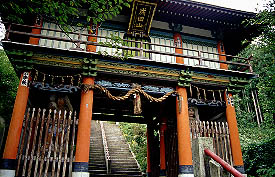 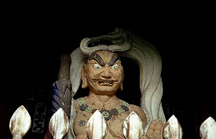
いきなり並みの寺でないことを感じさせてくれる山門のお出まし。カラーリングが独自のセンスを展開させている。中の仁王様も変。
で、成田山チェーンお約束の大階段を登っていく。途中、おだやかでない看板が。
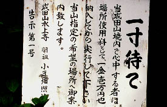
この他にも境内には住職のお説教看板がたくさん溢れていてイイ味を出している。
階段を登り切ると木造の本堂。ここも黄緑色に塗られており、嫌が上にも「珍」ムードが盛り上がる。
気になるのが本堂の外壁側面にある鉄骨製のテラス。何で本堂にこんなもんくっ付けちゃうんだか。謎である。一説に因ると本堂台無しである。高級車に竹ヤリ付けてシャコタンにしているようなもんである。
改造マニアとしか思えない。あ、ミニ噴水まで作ってら・・・
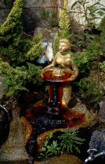
で、本堂の横を見ると小さなお堂が。
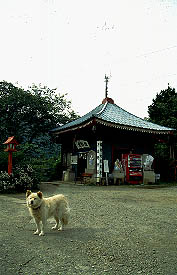
中は骨董屋のように雑然としたラインナップ。一番面白かったのがコレ。
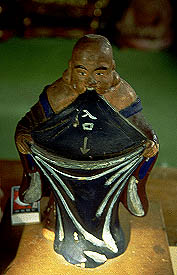
大風呂敷広げて皆さんの賽銭をお待ちしとります。
さらに本堂裏手には道が延びている。
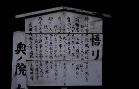
あちこちに住職のお説教看板が。俺、いい歳して道中ず〜っと説教されっぱなし。
そして山中に点在するやけに派手な仏像ワンルーム堂群を巡る。
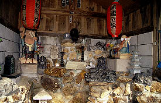 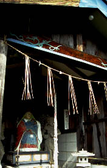 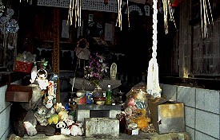
とにかくここの寺の特色は思いっきりのよい塗りっぷりと変な仏像。路傍の石仏などもきっちりペイントされてます。
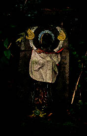
実はこのお寺、現在巨大不同妙王像を作成中らしい。
モノは鋳造製。高さが１８メートル。
これが台座の上に乗るらしい。完成すれば日本一の不動像となる。
で、台座の中には万体妙王像が奉納される予定。いまのところ細かい笑いで総合得点を稼いでいる感のあるこの寺だが、これが完成すれば不動ファンの立派な聖地（＝立派な珍寺）になる事請け合い。
完成予定は２〜３年後、現在パーツは出来上がったらしい。全国のファンよ、しばし待つべし。
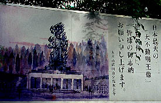
情報提供はへりおすさんです
2000.10.
珍寺大道場 HOME